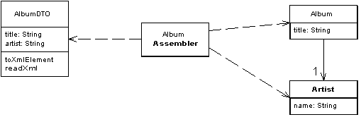

Data Transfer Object (Объект передачи данных)

Паттерн проектирования Data Transfer Object
Описание Data Transfer Object
Объект, которыей пересылает данные между процессами для уменьшения количества вызовов методов.
При работе с удалённым интерфейсом, таким как, например, Remote Facade, каждый запрос к нему достаточно затратен. В результате, приходится уменьшать количество вызовов, что означает необходимость передачи большего количества данных за один вызов. Чтобы реализовать это, как вариант, можно использовать множество прааметров. Однако, при этом зачастую код получается неуклюжим и неудобным. Также это часто невозможно в таких языках, как Java, которые возвращают лишь одно значение.
Решением здесь является паттерн Data Transfer Object, который может хранить всю необходимую для вызова информацию. Он должен быть сериализуемым для удобной передачи по сети. Обычно используется объект-сборщик для передачи данных между DTO и объектами в приложении.
В сообществе Sun многие используют термин "Value Object" для обозначения этого паттерна. Мартин Фаулер подразумевает под этим термином ( Value Object ) несколько иной паттерн. Обсуждение этого можно прочесть в его книге P of EEA на странице 487.
Использована иллюстрация с сайта Мартина Фаулера.